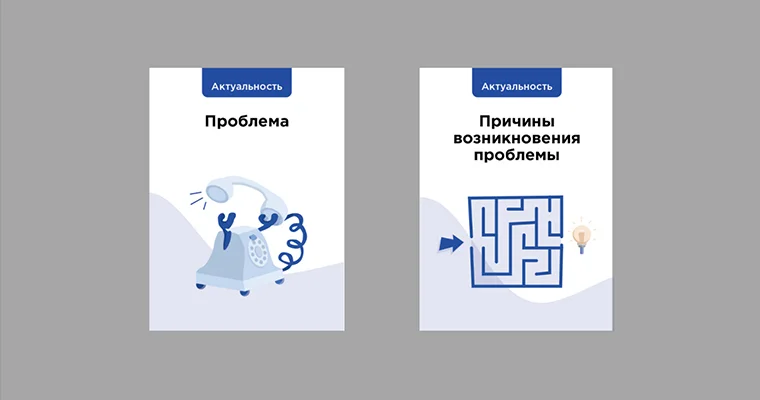

Как создать хорошую презентацию
© IGP, май 2025 г.
Подготовка
Успешность презентации, зависит от правильной подготовки к ней.
Существует 5 шагов, которые необходимо сделать для создания фундамаета
успешного выступления:
- Глубоко погрузитесь в материал
- Запишите всё — создайте план (список) материала, который хотите представить
- Выделите самое важное
- Изучите свою аудиторию
- Репетируйте
Глубоко погрузитесь в материал
В противном случае вам придется краснеть и сгорать со стыда, когда после презентации не получится ответить на уточняющие вопросы зрителей или презентация будет проведена блестяще, интересно и с огоньком, но зрители уйдут разочарованные, потому что не получат по-настоящему важной и полезной информации.
Запишите всё
Имеется в виду информация, которую вы хотите дать в своем выступлении. Нужно подать ее логично, без резких скачков с одного на другое.
Продумайте сценарий своего выступления, в идеале с завязкой, основным сюжетом и кульминацией.
Выделите самое важное
Чем глобальнее тема, тем важнее найти и выделить в ней основные акценты, чтобы не
перегрузить зрителей.
Вокруг этих акцентов и будет выстроено все ваше выступление: они станут
логической цепочкой, которая приведет слушателей к нужным выводам.
Изучите свою аудиторию
Кто эти люди, что их волнует, зачем они пришли на вашу презентацию, что хотят получить от нее.
Важно говорить с аудиторией на одном языке.
Репетируйте
Чтение вслух — очень ценный прием. Часто бывает так, что как только начинаете проговаривать текст, становится ясно, что он не доработан. А при чтении про себя все казалось идеальным.
Создание презентации
Слайды должны быть простыми
Обилие элементов, переплетение линий и нагромождение мелких деталей на фоне очень утомляют зрителя и отвлекают от основной мысли спикера.
Не перегружайте слайды. Достаточно простого фона и одного элемента, фокусирующего внимание.
Минимизируйте количество слов
Чем больше «воздуха» и меньше слов на ваших слайдах, тем проще и быстрее их читать. Залог успешной презентации — не более 3-5 слов в заголовках, короткие описания и максимально простые формулировки.
Используйте фотографии и графику в высоком качестве
Визуальные элементы призваны подчеркивать и дополнять смысл ваших слов.
Используйте изображения в качестве HD и с разрешением минимум 720р (1280х720).
Используйте аккуратные и актуальные диаграммы и графики
Элемент ради элемента — это плохо.
Здесь тоже важен принцип «воздуха» — чем меньше лишних элементов, шире строки и крупнее шрифт, тем проще зрителям уловить суть.
Используйте высококачественные, свежие шаблоны
Не стоит совершать распространенную ошибку и долго пользоваться одним и тем же шаблоном — например, стандартными вариантами из PowerPoint.
Выберите подходящие шрифты
Типографика — важный критерий успешной презентации.
Главное правило подбора шрифтов для презентации — однородность.
Уделите внимание подбору цветов
Проследите, чтобы выбранные оттенки удачно сочетались между собой.
Не забудьте о грамотной вёрстке
Правила вёрстки и композиции универсальны для каждой презентации.
Замедляйтесь
Слишком быстрая речь всегда выдает волнение и неуверенность, поэтому старайтесь говорить размеренно и достаточно медленно.
Забудьте о звуковых эффектах
Резкие, слишком высокие или низкие, громкие звуки отвлекают внимание аудитории.
Не используйте броские переходы между слайдами
Они отвлекают внимание от основного тезиса.
Не читайте с листа
Спикер, читающий речь с распечатанной «шпаргалки», выглядит неподготовленным.
Не сводите выступление к озвучиванию слайдов
Зачем зрителям спикер, который просто читает то, что написано на экране?
Главным и самым ценным источником информации для зрителей должны быть слова спикера, а не тезисы на слайдах.
Общая теория
изображение из открытых истоников
Ключевая цель

изображение из открытых истоников
Самая важная проблема аудитории
- Как эффективно организовать взаимодействие с клиентами и повысить продажи?
- Можно ли избежать рисков “исчезновения” важной коммерческой информации и т.д.
- Как сделать работу менеджеров прозрачной?
- и т.д.
изображение из открытых истоников
Структура презентации
- Введение (или экспозиция):
- Определение проблемы ЦА (или завязка):
- Аргументация выгод и преимуществ вашего предложения, закрытие возражений ЦА (или развитие действий)
- Ваше решение проблемы ЦА (или кульминация):
- Призыв к действию (или развязка):
приветствие, краткое определение темы, подводка к основной проблеме;
выделение главной «боли» аудитории;
определение ключевого оффера, которое поможет аудитории решить конкретную «боль»;
информация о том, что должна сделать аудитория.
Структура презентации компании
Презентация компании — ключевой инструмент, помогающий решить несколько бизнес-задач.
- выгодно презентовать себя потенциальным клиентам и партнерам
- сообщить о направлении своей деятельности и спектре услуг или продуктов
- сформировать имидж надежной и стабильной фирмы
Для презентации компании очень важно создать образ экспертов, втереться в доверие к аудитории и донести, что именно вы способны решить их проблемы.
Немаловажный аспект — правильный «ракурс» подачи информации. Рекомендуется сосредоточиться на том, что волнует аудиторию, что ей интересно, что хотелось бы узнать о компании в первую очередь.
Блок 1.
изображение из открытых истоников
Блок 2.

изображение из открытых истоников
Блок 3.

изображение из открытых истоников
Блок 4.

изображение из открытых истоников
Блок 5.

изображение из открытых истоников
Блок 6.

изображение из открытых истоников
Блок 7.

изображение из открытых истоников
Презентация продукта/услуги
Блок 1.
изображение из открытых истоников
Блок 2.
изображение из открытых истоников
Блок 3.

изображение из открытых истоников
Блок 4.

изображение из открытых истоников
Блок 5.

изображение из открытых истоников
Презентация стартапа
- Небольшой объем (до 10-15 слайдов), так как на выступление спикера отводиться не более 10 минут;
- Краткость изложения сути проекта;
- Логичность повествования, информативность и структурированность презентации.
Блок 1.

изображение из открытых истоников
Блок 2.
изображение из открытых истоников
Блок 3.
изображение из открытых истоников
Блок 4.

изображение из открытых истоников
Блок 5.

изображение из открытых истоников
Блок 6.
изображение из открытых истоников
Сколько стоит презентация
Не претендуя на полноту описания и точность цен.
Лишь попытка проанализировать
собственный
опыт.
Презентация — главный инструмент коммуникации в бизнесе сегодня. От качества презентации зависит результат деловых переговоров, впечатление зрителей или крупная сумма денег, если вы впервые показываете свой проект инвестору.
Фрилансеры
Свободный работник, выполняющий работу из дома.
Стоимость: от 500₽ за слайд, а стоимость стандартной презентации может варьироваться от
5000₽ до
25000₽.
Преимущества: скорость и гибкость.
Недостатки: не все фрилансеры ответственно подходят к договоренностям.
Вывод: общий уровень работ средний, либо ниже среднего.
Где найти фрилансера?
- биржа фриланс-услуг;
- телеграм каналы по фрилансу;
«Авито»
Дизайн-студия
Студия, которая профильно занимается презентациями.
Стоимость: от 1500₽ до 3000₽ за слайд, презентация может обойтись от 25000₽ до 100000₽.
Преимущества: Проект с нуля. Эмпатия. Репутация.
Вывод: студия сделает лучше, постарается разобраться в материале, а не просто красиво разрисует слайды.
Крупноге агентства
Не ограничивают себя презентациями, а работают в более широкой сфере визуальных коммуникаций.
Под
этим термином понимается любое средство донесения визуальной информации — презентации,
видеоролики,
брендинги, веб-сайты, печатные материалы и тд.
Стоимость: от 50000₽
Где заказать презентацию
Сделать самому презентацию можно, но необходимо обладать многими талантами, навыками и
техниками. Кроме того, требуется достаточно много свободного времени для ведения творческого
процесса.
Конечно, никто лучше вас не знает ваш продукт, но и создание презентации процесс не простой.
Фриланс подойдет для простых задач или для случаев, когда бюджет ограничен.
Хорошо, если у
вас уже будет готовый контент, поскольку найти фрилансера который сможет одинаково хорошо
работать с дизайном и контентом непросто.
Презентации для защиты диплома, инструкции и
несложные
внутренние документы можно смело отдавать на фриланс.
Вы начинающий стартап и хотите убедительную презентацию?
Изложите ваши мысли в понятный
документ и отдайте их на упаковку небольшой студии.
Вам разработают контент, сюжетную линию и сделают дизайн за разумные деньги.
Если вы готовите сложный и важный проект, от презентации которого может зависеть большая
сумма денег, репутация компании или исход переговоров — обратитесь в студию визуальных
коммуникаций, которая имеет опыт подготовки таких материалов.
В этом случае вклад в действительно качественную презентацию можно рассматривать как
инвестицию.
Более подробную информацию можно получить на дистанционных курсах